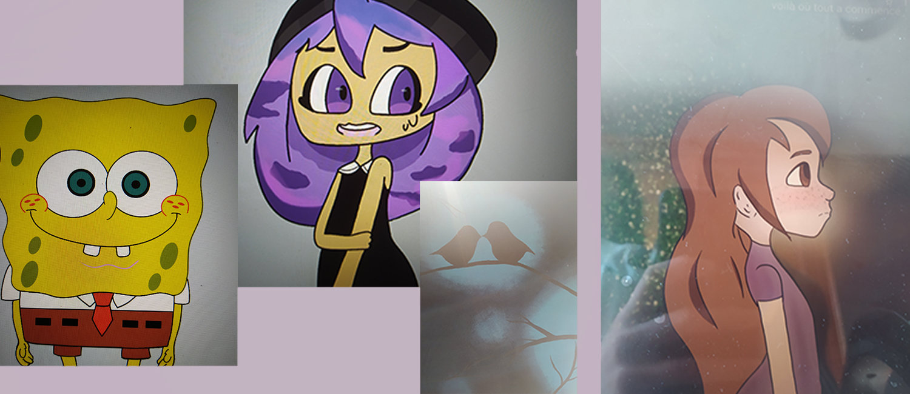

Mes dessins

Mangas
Voici ma longue période ou je dessiné principalement que un style ma,gas(2015-2018). J'ai pu découvrire ce style et essayé de faire des petites mises en scène.

Réalisme
Pendant la période du cobid je me suis intéréssé au style réaliste et plus particulièrement au paysage. J'ai eu quelque cours de dessin ce qui m'a permis de pouvoir mieux retrenscir ce que je voyais.

Mes créations numériques
J'ai commencé les créations numériques en 2020. C'est grâce à la réation numérique que je me suis intéréssés à l'animation. J'ai pu créé mes peronnages puis ensuite je les animés.